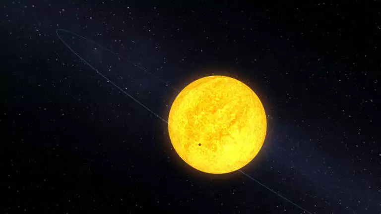
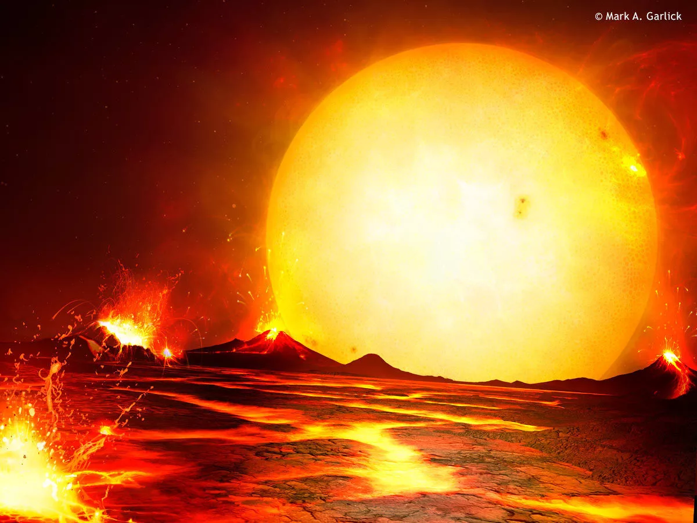

Discoveries:
(Some Discovered Exoplanets)
TOI-715 b
It was first discovered in 2023. It is about 137 light-years away from our planet, and is a super-Earth that orbits a red dwarf sun. The exoplanet has a mass of 3.02 Earths and it is about one and a half times as wide as Earth. It orbits within the “conservative” habitable zone around its parent star, which is the distance from the star that could give the planet the right temperature for liquid water to form on its surface.

Kepler-10b
It measures 1.4 times the size of Earth, has a mass of 4.6 times that of Earth, and an average density of 8.8 grams per cubic centimeter (it is significantly denser than Earth's 5.5). At the time of its discovery in 2009, it was the smallest planet known outside our solar system. It is a rocky planet. It orbits its star incredibly closely, taking only 20 hours to circle it at an altitude only about 1.5 times the diameter of the star itself.

CoRoT-7b
It is 1.6 times bigger than Earth, with 5 times the mass. It was the first-discovered rocky planet, found by the French satellite CoRoT(Convection, Rotation and Planetary Transits) in 2009, using transit photometry. It has a global molten lava ocean surface. Scientists have even speculated that it is the leftover core of a gas giant.
